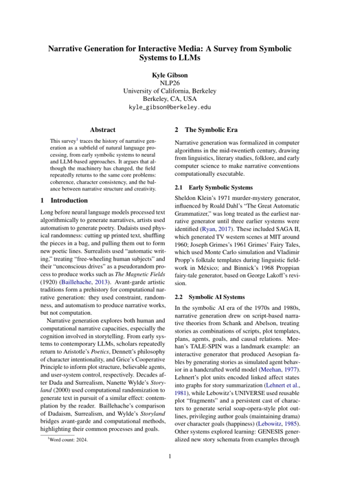
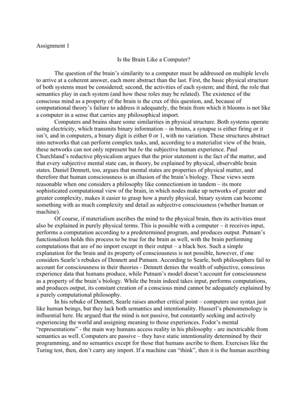
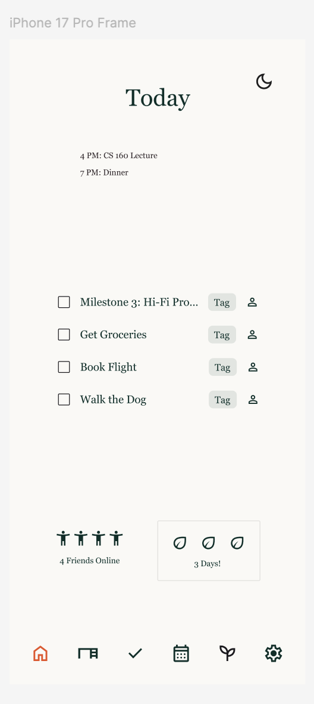
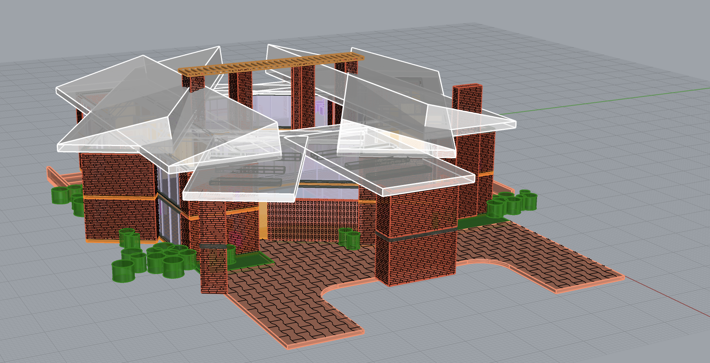
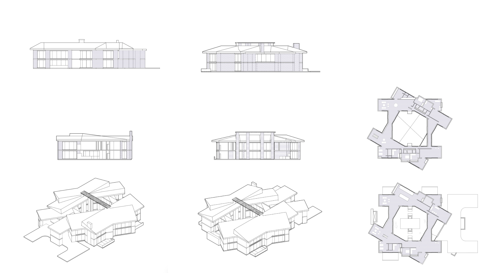

Kyle Gibson
I'm an undergraduate at UC Berkeley studying Cognitive Science and Data Science. I'm interested in human-computer interaction, natural language processing, and system design (especially in structural, symbolic treatments of statistical machine learning components).
In my free time, I enjoy hanging with my golden retrievers (Cooper and Carson), playing guitar, cooking vegan food, and exploring the outdoors.
NLP, HCI, symbolic AI, narrative generation, accessibility, ludology
Selected Research & Writings
Suspense in Short Fiction
Undergraduate Research Apprenticeship Program (URAP) — 2026
Research apprentice in Professor David Bamman's Computational Literary Studies project, working with postdoc Svenja Guhr on suspense in British and American short fiction. Annotating documents, compiling a corpus, and researching how LLM annotations compare to human gold standards and whether models can transcend internal representations of suspense to follow theory-specific annotation prompts.
Suspense in Shorts: Testing Theory Pluralism Against LLMs’ Intrinsic Concepts — poster presented at Text as Data 2026.

Narrative Generation Subfield Survey
INFO 159: Natural Language Processing — 2026
A survey of research on narrative generation, written for INFO 159.
AI use: I used ChatGPT (GPT-5.5) for text editing and Ai2 Asta to find some initial papers.

Writing Samples on Cognitive Science
COGSCI 1: Introduction to Cognitive Science — 2021
Two early pieces on minds, machines, and language, written in 2021, before ChatGPT.
See more
An essay examines the brain–computer analogy at three levels (physical structure, function, and meaning) and, drawing on Searle and Husserl, argues the brain isn't like a computer in any meaningful sense.
A research proposal designs a test of Chomsky's universal grammar: train a model on the language a child hears from birth to age ten, then compare its writing with real ten-year-olds'.
Teaching
CS 195 Teaching Assistant
Teaching — 2024
TA for CS 195, Berkeley's course on the social implications of computing, taught by Lisa Yan. I co-taught a Harkness-style honors discussion section in which we discussed historical and current social issues related to technology, and gave a guest lecture on Timnit Gebru's ouster from Google related to “On the Dangers of Stochastic Parrots.”
Audio & Design Portfolio
Music Production — Pro Tools, Ableton
Indie Rock Recording — 2018–present
Examples from recording and producing indie rock music. Before I transferred to Berkeley at 27, my main pursuit was audio engineering. I interned in recording studios and recorded many friends from my community in Los Angeles. I hope to make more time for music production after finishing my undergraduate degrees, and even incorporate it in future academic work.
Full Band Instrumental Sketch 01
Full Band Instrumental Sketch 02

Grove: Hi-Fi Prototype — Figma
CS 160: User Interface Design and Development — 2026
My high-fidelity Figma design for Grove, a collaborative task app. The Today screen combines your schedule, tagged tasks, online friends, and a growth streak in a calm, forest-inspired color palette. A version of the app was later built collaboratively with teammates.
This was my favorite part of CS 160, Berkeley's introductory human-computer interaction course. It brought together what I'd learned about HTML, CSS, user studies, and Gestalt principles into a higher-level design in Figma.


Janss House: CAD Model — Rhino 8
ARCH 124A: Digital Design Methods — 2026
A digital model of a house near my hometown in Thousand Oaks: the Janss House, one of the mid-century modern homes from Arts & Architecture magazine's Case Study House program. I transformed and edited the house to put my new Rhino skills to work, then produced architectural drawings from the model.